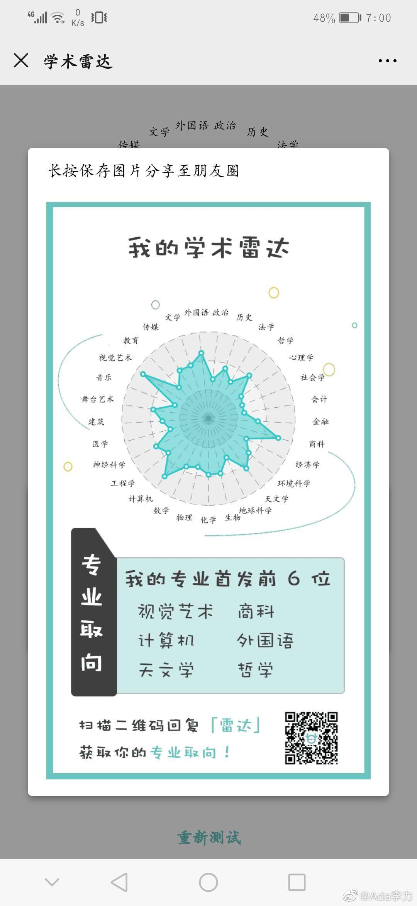

#不明所以#
姣姣拉着我做了专业倾向性测试。测试这个东西，有自证预言的作用。
比如，我测试结果的前三个专业：视觉艺术，商科，计算机。我是这么理解的。
专业学的计算机，程序员做了十年
创业才转商科，卖货做生意
视觉艺术的原因是，我最近一年多都在学习视频制作，这是未来大趋势。
不知道自证预言，是不是对姣姣有效。
姣姣拉着我做了专业倾向性测试。测试这个东西，有自证预言的作用。
比如，我测试结果的前三个专业：视觉艺术，商科，计算机。我是这么理解的。
专业学的计算机，程序员做了十年
创业才转商科，卖货做生意
视觉艺术的原因是，我最近一年多都在学习视频制作，这是未来大趋势。
不知道自证预言，是不是对姣姣有效。
- 